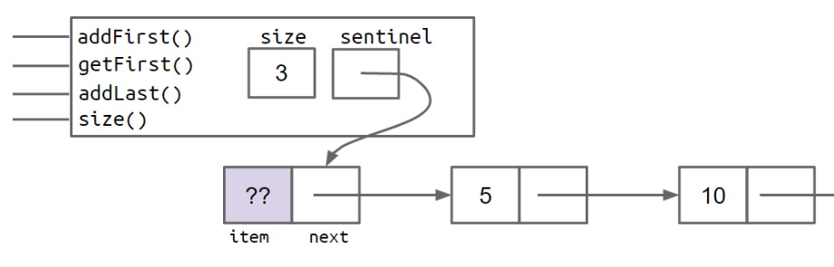
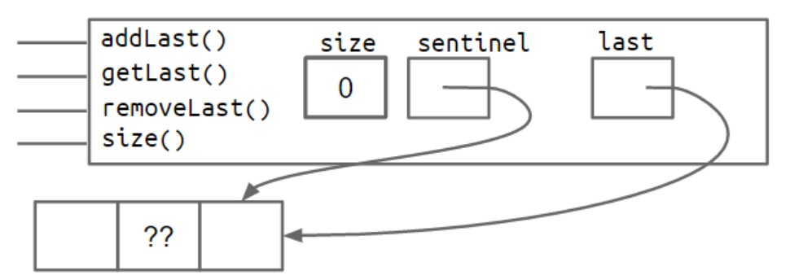
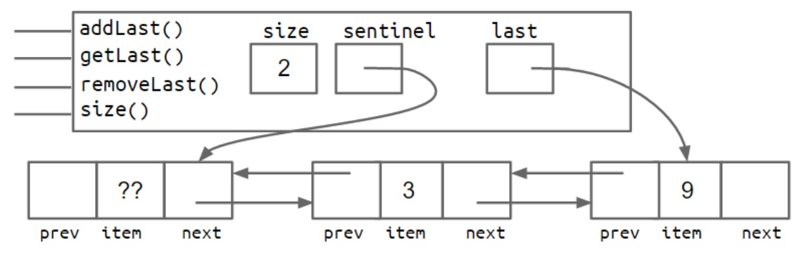
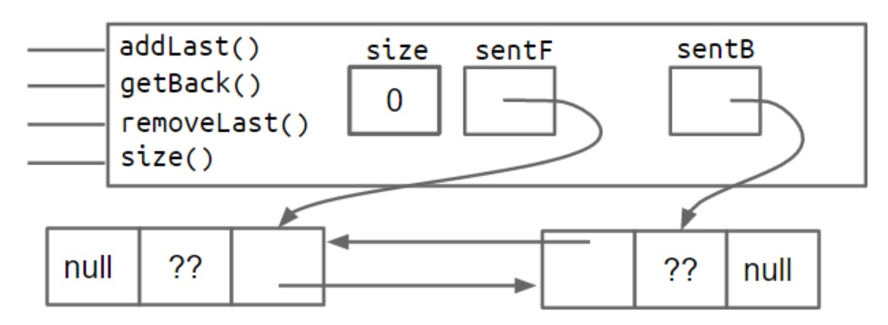
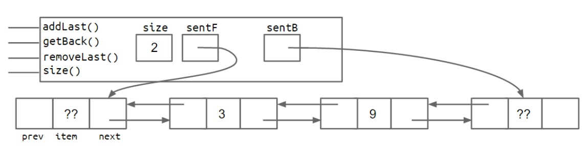
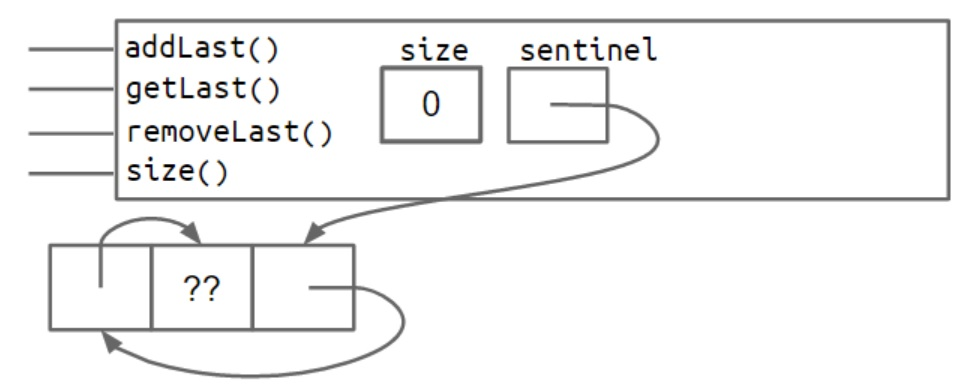
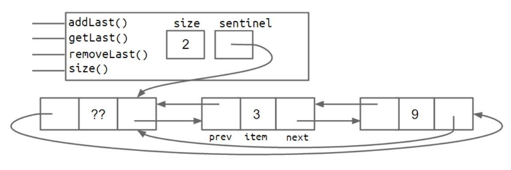

最近正在学习UC Berkeley的CS61B这门课，主要是采用Java语言去实现一些数据结构以及运用数据结构去做一些project。这门课不仅告诉你这个东西怎么做，而且一步一步探寻为什么要这样做以及为什么会有这些功能。我们有时在接触某段代码或功能的实现时，可能直接就看到了它最终的面貌，而不知道如何一步步演化而来，其实每一个功能的添加或优化都是对应一个问题的解决。下面就这门课中关于链表中哨兵结点的相关问题进行总结。
什么是哨兵结点
哨兵顾名思义有巡逻、检查的功能，在我们程序中通过增加哨兵结点往往能够简化边界条件，从而防止对特殊条件的判断，使代码更为简便优雅，在链表中应用最为典型。
单链表中的哨兵结点
首先讨论哨兵结点在单链表中的运用，如果不加哨兵结点在进行头尾删除和插入时需要进行特殊判断。比如在尾部插入结点的代码如下：
1 | void addLast(int x) { |
如上所示需要对结点为空的特殊情况进行判断，头部加了一个哨兵结点后就可以不需要判断了（不会为空）

双链表中的哨兵结点
Version 1: 双哨兵
在双链表中需要能够在头部和尾部分别进行插入删除操作（可以实现双端队列），为了能快速在尾部进行插入删除，需要引入指向尾部的指针。截图如下（图片来自CS61B）


上述增加了一个指向尾部的last结点，从上图可以看出一个问题，last结点有时指向哨兵结点，有时指向实际结点。这会导致特殊情况的出现，比如在进行addFirst操作时，last指向哨兵结点时插入后需要将last往后移动一个，而第二张图指向实际结点时在头部插入结点后并不需要改变last指针。这时需要在尾部后也引入一个哨兵结点，以使其一致。相应示意图如下：


Version 2：循环双链表
上述Version1需要两个哨兵结点，可以对其进行改进。可以使用头部结点的prev指针指向尾部，尾部结点的next指针指向哨兵，这样就只需要一个哨兵结点，使链表变成循环链表，比Version1更为简洁优雅。


在对如上所示进行插入和删除操作时一定要格外注意，自己在写的时候很容易就漏掉某个指针的关系设置，最好在纸上自己画一遍。（对于要改变的连接可能会影响其他的，这时可将其暂存或最好设置）
在头部插入的代码如下：
1 | public void addFirst(Item item) { |
尾部插入代码如下：
1 | public void addLast(Item item) { |
头部删除代码如下：
1 | public Item removeFirst() { |
尾部删除代码如下
1 | public Item removeLast() { |
总结与感想
（1）虽然看起来很小很简单的事情，但实现起来却有很多细小问题可以考虑，学会把一件小事做的很漂亮。（small but smart）
（2）学会分析一个东西的来龙去脉，为什么会有这部分，以及怎么改进的。
参考：
1.cs61b:https://joshhug.gitbooks.io/hug61b/content/chap2/chap23.html
2.算法导论10.2链表